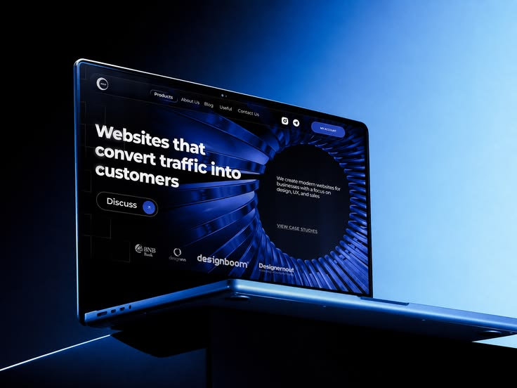
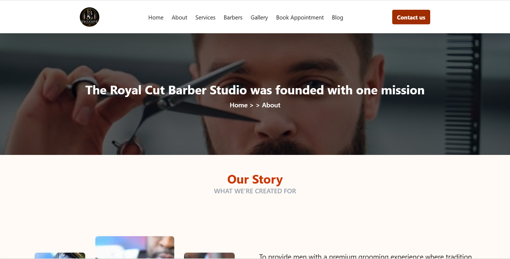
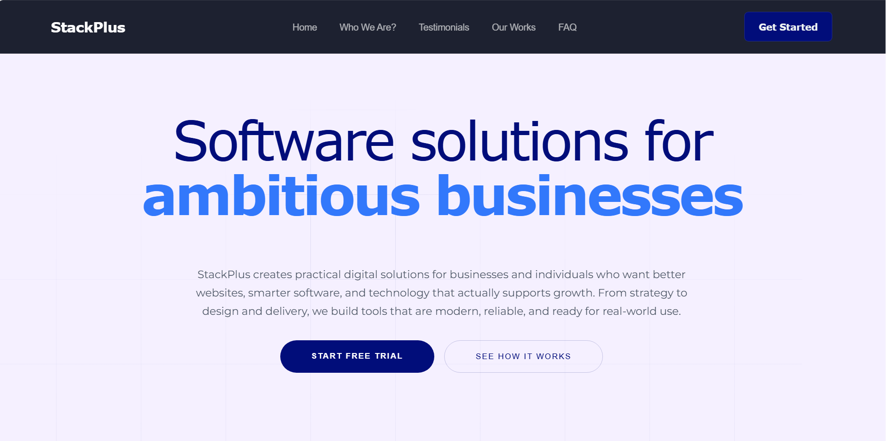

Practical thinking, not flashy shortcuts
We focus on solutions that solve actual problems, improve daily work, and create long-term value instead of short-lived trends.
StackPlus creates practical digital solutions for businesses and individuals who want better websites, smarter software, and technology that actually supports growth. From strategy to design and delivery, we build tools that are modern, reliable, and ready for real-world use.

StackPlus is a software solutions startup enity focused on building modern, practical, and scalable digital experiences for businesses, organizations, and individuals.
From websites and e-commerce platforms to SaaS applications and database solutions, we combine thoughtful design with reliable technology to turn ideas into useful digital products.
Responsive websites and web applications designed for modern users. Design that feels effortless. Every click, every scroll, built for the people, user-first digital experiences designed to engage, convert, and keep people coming back.
Software and SaaS solutions built with maintainability and growth in mind. We build felxible, future-ready solutions to grow with your business, organizations or entity. No rebuilds, just growth-ready systems that work as hard as you do.
Database management and technology solutions that help organizations work more efficiently. Smart tech meets real data. We turn insights into action and systems into results.
At StackPlus, we build digital solutions around what people and businesses actually need. From websites and online stores to custom software and technology support, we focus on making ideas practical, useful, and ready for real-world use.
Here are some of the ways we can help. Explore the services below, or visit our full services page to see everything StackPlus has to offer.
Because we do more than build websites and apps — we create digital systems that work for real businesses, real goals, and real growth.
We focus on solutions that solve actual problems, improve daily work, and create long-term value instead of short-lived trends.
Every project starts with understanding how you operate, what you need, and where your business is headed so the final product supports growth.
We build systems that are modern, scalable, and easy to manage, so your digital foundation keeps working as your business evolves.
From setup to optimization and ongoing support, we stay involved to help you keep your technology running smoothly and efficiently.
We help businesses turn ideas into digital systems that feel clear, reliable, and ready for real-world use.
Let’s build your next solutionWe keep every project clear, focused, and collaborative from the first idea to final launch.
We learn about your goals, challenges, audience, and the problems you want to solve.
We map the right approach, structure, and technology so the solution fits your business.
We design and develop a smart, practical solution that is easy to use and ready to grow.
We deliver, refine, and support the final product so it continues to work for you.
StackPlus helped us turn our ideas into a clear digital plan. The team listened to what we needed, explained the options, and delivered a solution that is easy to use and build on.
The process was organized from our first conversation through launch. We knew what to expect at each stage, and our new website gives our business a more professional place online.
We needed technology that would support the way our team works. StackPlus helped us find a practical approach and guided us through the project from planning to delivery.
Explore a few digital experiences created for growing businesses and modern teams.

Business Website
A polished website for a barbershop, bringing its services and brand together in one convenient place.
Visit Site
Technology
A modern digital presence designed to introduce a technology startup and make its solutions easy to explore.
Visit Site
Digital Solutions
The StackPlus website presents practical digital services and helps businesses explore solutions for their needs.
Visit SiteFind answers about StackPlus services, project planning, and ongoing support.
StackPlus builds websites, web applications, e-commerce platforms, and SaaS products, and offers design, SEO, database, and technology support.
StackPlus works with businesses, organizations, and individuals looking for practical digital solutions.
Yes. Each project starts by understanding your goals, challenges, audience, and requirements so the proposed solution fits your needs.
Projects move through discovery, planning, building, and launch. StackPlus keeps you informed and involved throughout each stage.
StackPlus can help with ongoing support and optimization to keep your digital solution running smoothly as your needs change.
Contact StackPlus with a brief description of your goals and what you need help with. The team can discuss the right next steps with you.